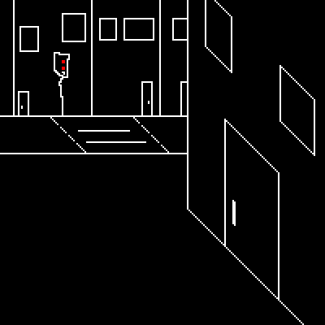
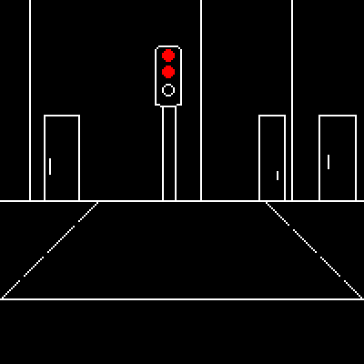
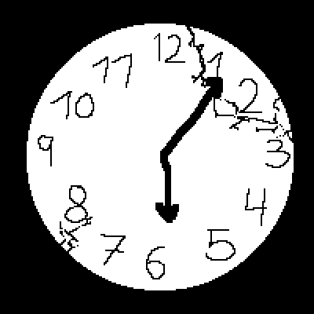
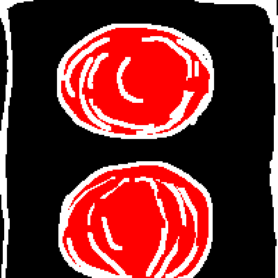
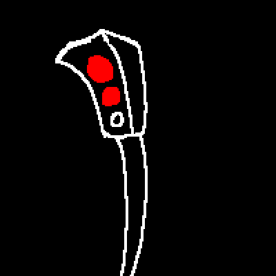
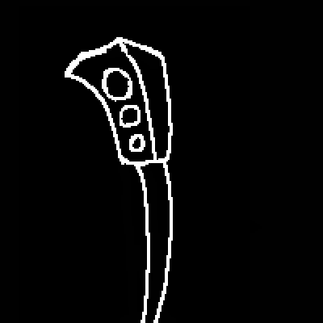
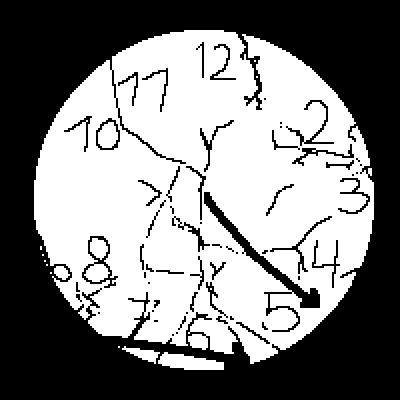

du biegst in die straße vor deinem haus ab

vom weiten erkennst du bereits die letzte ampel die dich von deiner haustür trennt.

du hattest schon immer das gefühl das diese ampel langsamer schaltet als andere. du starrst in ihr rotes licht und wartest auf ein signal....
du wirfst einen weiteren blick auf deine uhr. wie lange stehst du hier schon?

du richtest deine augen erneut auf das rote licht. es sind keine autos auf der straße zu sehen. du konntest einfach gehen aber dein stolz lässt es nicht zu. du und die ampel sind gefangen in einem zweikampf. es ist spät doch du gibst nicht auf.
du bist ein gewinner. du warst es schon immer. das wird sich jetzt nicht ändern.
 die ampel fängt an sich langsam vor deinen augen zu verformen. aus ihrem körper schießen kabel raus als wären sie tentakel. sie werden immer länger.
sie kommen auf dich zu.
du schließt deine augen.
es ist ruhig...
du hört sein leises rostiges quietschen.
du öffnest deine augen.
die ampel sieht anders aus.
einsamer.

du bereitest deine augen auf ein letztes duell mit ihr vor.
doch dann erlischt ihr licht.

du bleibst noch eine weile vor ihr stehen.
unischer wer von euch beiden gewonnen hat schaust du auf die uhr.

es ist zeit schlafen zu gehen.
du überquerst die straße.
steckst deinen schlüssel in die tür und begibst dich in deine wohnung.
vom fenster aus siehst du auf die kalte ampel hinunter.
morgen wird sie wieder leuchten.
ihr werdet euer spiel wiederholen.
aber diesmal vertrauter.